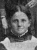

|
Mary Ann Stewart
Born 4 MAR 1858 Draper,Salt Lake,Utah
Died 3 APR 1925 LOGAN,Cache,Utah
Married
Richard Alando Ballantyne  27 DEC 1875 Salt Lake City, Utah 27 DEC 1875 Salt Lake City, Utah
The 1st child of Isaac Mitton Stewart and Elizabeth White
|
 |
William Mitton Stewart
Born 5 SEP 1859 Draper,Salt Lake,Utah
Died 26 JUN 1913
Married
Sarah Taylor Vincent 17 DEC 1884 LOGAN,Cache,Utah
The 2nd child of Isaac Mitton Stewart and Elizabeth White
|
|
Alice Caroline Stewart
Born 16 FEB 1862 Draper,Salt Lake,Utah
Died 23 MAY 1933 Salt Lake City, Utah
Married
Richard Henry Stringfellow 5 MAY 1885 LOGAN,Cache,Utah
The 3th child of Isaac Mitton Stewart and Elizabeth White
|
|
Elizabeth Stewart
Born 3 SEP 1863 Draper,Salt Lake,Utah
Died 9 OCT 1920 OGDEN,Weber,Utah
Married
William Wilson Fife 7 DEC 1882 Salt Lake City, Utah
The 4th child of Isaac Mitton Stewart and Elizabeth White
|
|
Eliza Jane Stewart
Born 27 AUG 1865 Draper,Salt Lake,Utah
Died 25 OCT 1933 Salt Lake City, Utah
Married
John Daniel Fife 20 FEB 1889 LOGAN,Cache,Utah
The 5th child of Isaac Mitton Stewart and Elizabeth White
|
12 |
Samuel White Stewart
Born 21 MAY 1867 Draper,Salt Lake,Utah
Died 26 DEC 1955
Married
Ella Maria Nebeker 19 SEP 1894 Salt Lake City, Utah
Married
Agnes Ann Fife 23 SEP 1891
The 6th child of Isaac Mitton Stewart and Elizabeth White
|
|
Charles Beakley Stewart
Born 20 JUL 1870 Draper,Salt Lake,Utah
Died 20 MAY 1945 Los Angeles,Los Angeles,California
Married
Katherine Romney 30 SEP 1896 Salt Lake City, Utah
The 7th child of Isaac Mitton Stewart and Elizabeth White
|
|
Barnard Joseph Stewart
Born 13 JAN 1873 Draper,Salt Lake,Utah
Died 6 MAR 1931 Salt Lake City, Utah
Married
Leonora Mousley Cannon 13 SEP 1899 Salt Lake City, Utah
The 8th child of Isaac Mitton Stewart and Elizabeth White
|
12 |
Luella Evaline Stewart
Born 5 DEC 1875 Draper,Salt Lake,Utah
Died 12 MAR 1950 Salt Lake City, Utah
Married
Marion David Lindsay 5 OCT 1898 Salt Lake City, Utah
Married
James Buchanan Porter 29 APR 1915
The 9th child of Isaac Mitton Stewart and Elizabeth White
|
123 |
Nettie Priscilla Stewart
Born 11 SEP 1879 Draper,Salt Lake,Utah
Died 25 DEC 1953 Los Angeles,Los Angeles,California
Married
Alfred Henry Taylor 11 JUN 1902 Salt Lake City, Utah
Married
Jay Anderson Los Angeles,Los Angeles,California
Married
John F. Edison
The 10th child of Isaac Mitton Stewart and Elizabeth White
|
* |
Orson Richard Stewart
Born 22 MAY 1881 Draper,Salt Lake,Utah
Died 15 FEB 1884 Draper,Salt Lake,Utah
The 11th child of Isaac Mitton Stewart and Elizabeth White
|

 symbol is a link to a history, and the chart
symbol is a link to a history, and the chart 
{kind=link}
{kind=link}